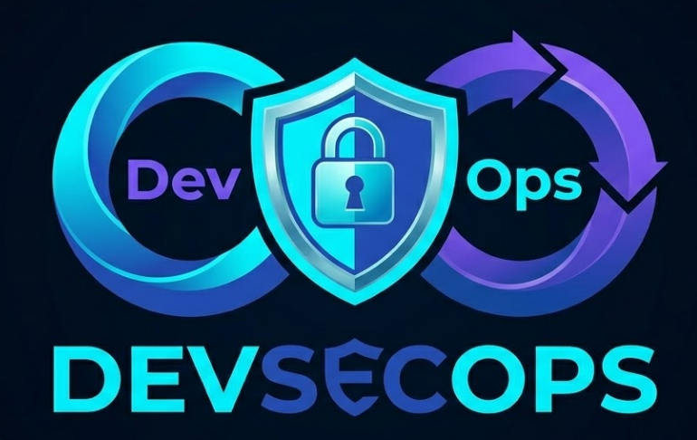

// 04 · Portfólio Técnico
Projetos em Destaque
Meus laboratórios práticos publicados no GitHub

Featured Project · FinOps · Shift-Left
FinOps Hands-On — AWS Costs + CO2e in Every PR
Este projeto demonstra a implementação de uma cultura Shift-Left FinOps, automatizando a visibilidade de custos e impacto ambiental diretamente no fluxo de Pull Request. Utilizando Terraform e Infracost, o pipeline fornece feedbacks financeiros e de sustentabilidade antes mesmo do deploy.
Destaque Técnico: Autenticação segura via AWS OIDC (Workload Identity Federation), eliminando chaves estáticas.
Foco: Otimização de custos, governança e automação de infraestrutura escalável.
Ver no GitHub →
Infraestrutura como Código & LocalStack
EC2 Cloud Engineering Lab - Terraform Variables
Foco na eliminação de hardcoding e modularização avançada. Provisionamento de servidor web em ambiente AWS simulado (LocalStack) com foco em flexibilidade e segurança.
Destaque: Arquitetura desacoplada e esteira CI/CD com custo zero.
Ver no GitHub →
DevSecOps & Cloud Security
S3 DevSecOps Lab - Terraform & LocalStack
Implementação de esteira DevSecOps com 3 estágios (Lint, Security Scan e Plan). Validação automatizada de segurança com tfsec antes de qualquer apply.
Destaque: Aplicação automática de criptografia AES256 e bloqueio de acesso público via módulos reutilizáveis.
Ver no GitHub →
CI/CD · Kubernetes · GitOps
Baleia GitOps
Pipeline de CI nativo de container em cluster Kubernetes local (Kind). Build seguro sem Docker-in-Docker, versionamento dinâmico de imagens Go e push para Docker Hub.
Destaque: Build seguro (sem Docker-in-Docker) e versionamento dinâmico de imagens Go.
Ver no GitHub →
Multi-Cloud · Configuration Management
Deploy de Site Estático · GCP + Ansible
Fluxo completo de IaC para provisionar recursos no Google Cloud e gerenciar configuração automaticamente via Ansible. Do zero ao servidor web funcional em um pipeline.
Destaque: Integração entre provisionamento (Terraform) e configuração de software (Ansible).
Ver no GitHub →
Observabilidade · AWS · Monitoramento
AWS CloudWatch & CloudTrail Lab
Laboratório de observabilidade e auditoria na AWS. Provisionamento de instâncias EC2 com alarmes de CPU via CloudWatch e logs de auditoria criptografados com CloudTrail — tudo como código com Terraform.
Destaque: Observabilidade completa com alertas proativos e trilha de auditoria criptografada.
Ver no GitHub →
Serverless · Python · AWS Lambda
Processador Automático CSV → JSON
Pipeline serverless orientado a eventos na AWS. Um upload de arquivo CSV no S3 dispara automaticamente uma função Lambda que converte, valida e salva o resultado em JSON em outro bucket — sem servidor, sem custo idle.
Destaque: Arquitetura event-driven — do upload ao JSON processado sem nenhuma intervenção manual.
Ver no GitHub →